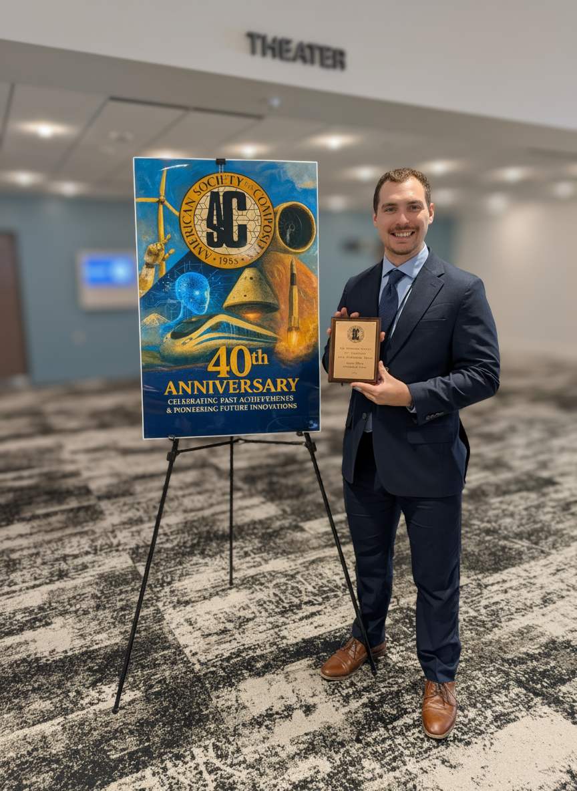

Jason P. Mack
University of Akron | Ph.D. Candidate | Mechanical Engineer | Researcher in Composites
About Me
I'm a mechanical engineer and researcher specializing in composite materials, impact modeling, and machine learning. My work bridges experimental testing, numerical simulation, and AI-driven design tools to tackle real-world challenges in advanced materials. Beyond research, I'm passionate about teaching and mentorship—whether it's guiding students through their first design course or demonstrating how data science can enhance engineering decisions. I believe in empowering the next generation of engineers to think critically, work ethically, and embrace interdisciplinary innovation.
Skills
- Finite Element Analysis (ABAQUS)
- Python, MATLAB, SQL
- Machine Learning & Deep Learning (TensorFlow, PyTorch, scikit-learn)
- Composite Materials Design & Testing
Recent News
December 2025: I am honored to announce that I have been awarded the prestigious 2025 ASC PhD Scholarship by the American Society for Composites! This scholarship supports my ongoing doctoral research on using machine learning to predict failure in complex composite structures.
